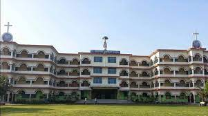

St. Joseph's Convent School

The Diocese of Jalandhar owns and administers a number of convent schools in Punjab and Himachal Pradesh
under the dynamic leadership of the Bishop of the Diocese of Jalandhar: One of the main objectives of the
Diocese is to impart quality and value based education to every child in all nooks and corner of Punjab and
Himachal Pradesh. ST. JOSEPH'S CONVENT SCHOOL, Nawanshahr is an English Medium School founded under the
aeigs of the Diocese of Jalandhar and was established on 17th July 2003, and officially inaugurated on 13th
January 2006.
Computer Aided Teaching
Computer Science is introduced in the school curriculum,to familiarize the students with moderen technology
and to prepare them to face the challenges of the moderen technology era in which computers are very becoming
a necessity rather than a luxury.It is a technology assisted teaching aid which improves teacher effectiveness
and productivity, makes learning an enjoyable experience for students and improves academic performance. It
also enables instant formative assessment of learning outcomes in class. To optimize the effectiveness of
concept, a Knowledge Center equipped with Content Preview System (CPS) has been established for reference by
teachers. The teachers select and sift the material which is then presented to the students in form of digital
instruction exactly mapped to meet with the specific objectives to fulfill the requirements of the students.
The content being in the form of 3D and 2D multimedia modules is highly absorbing.
Department Of Science
The school is well equipped with the separate Physics, Chemistry and Biology Laboratories.All the facilities
are provided to the students under the capable and experienced teachers to develop their creative and
innovative ideas in to reality by conducting experiments. We have well equipped with latest apparatus and
specimens to facilitate teaching-learning of science through ‘learning by doing method’. Slidoscope,
Projectors and other apparatuses are used in teaching all the intricacies of science-based topics and generate
scientific temper in our budding scientists. The school is set to build a planetarium in the near future to
quench thirst for celestial knowledge
Sports & Games
Physical Education is provided with healthy sports and games. Capable instructors are readily made
available. Individual performance of the students is given all attention along with the instilling of spirit
of co- operation and sportsmanship. There is arrangement for team games: Football,Basketball, Badminton,
Volley-Ball Kabbadi etc. The School organize Sports week every year to encourage competition,which displays
strength, stamina,vigor and sportsmanship. Numerous athletic events like Long Jump, Shot put, Relay race etc.
take place during the Sports Week
School Library
The school has a well equipped library.There are about 8000 books on different branches of knowledge,for
various age groups. Newspaper and journals are provided for the students.Every Year numerous books on various
topics are added to this house of learning. Computer Science is introduced in the school curriculum,to
familiarize the students with moderen technology and to prepare them to face the challenges of the moderen
technology era in which computers are v=becoming a necessity rather than a luxury.It is a technology assisted
teaching aid which improves teacher effectiveness and productivity, makes learning an enjoyable experience for
students and improves academic performance. It also enables instant formative assessment of learning outcomes
in class.
Language Lab
Language Lab offers distinct opportunity to the students to learn effective communicative skills. The focus
is laid on correct pronunciation, right stress and intonation. Using linguaphones and audio-aids, voice
modulation is also taught. It enhances their communication skills and interest to participate in declamations,
debates and group discussions Laboratories.